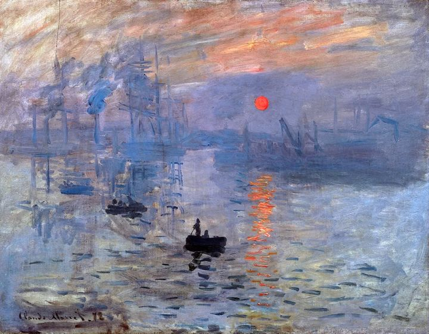
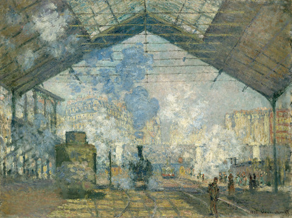
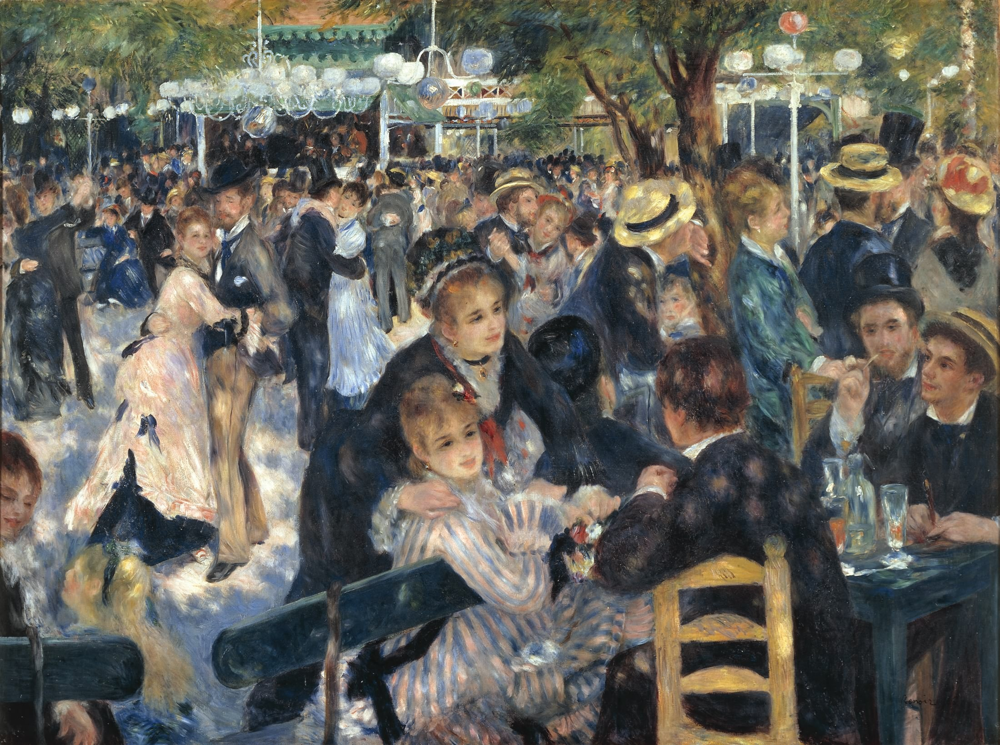

Development
摄影技术出现以后绘画艺术何去何从
自1845年摄影技术出现以来，在发现摄影技术在“刻画静态的真实画面”上已经能够取代绘画的功能后，艺术家们就试图开拓新的艺术视角，使之不走上陈陈相因之路。 其中的一个视角便是对光影和色彩的重新发现：以前的学院派们喜欢强调在室内为静物作画时的规则，但是印象派艺术家们发现，在阳光下的明暗对比会强烈的多，而且阳光下的物体外形也会十分模糊 是相信学院派陈旧的教条，还是相信当下自己的眼睛？ 艺术家们果断选择了后者。

“这幅画只能给人一种模糊的印象！” 在巴黎的画展上，评论家轻蔑地评论莫奈的
《日出·印象》
，然而谁也没想到，原本的蔑称竟成为一个新的流派流传千古的名字。 大胆的笔触，模糊的轮廓，可以看出年轻的艺术家们开始创造属于自己的艺术语言
关于莫奈更进一步的艺术追求，我们可以看到他的
《圣拉查尔火车站》
他并不想表现具体的事物外形，而是神往于光线穿过玻璃顶棚射向蒸气烟云的效果，神往于从混沌之中显现出来的机车和车厢的形状。莫奈相信光线和空气的神奇效果是最为重要的，他巧妙的平衡了画面的调子和色彩。


同样的舞会主题，前人或是着重于表现
幽默的人物（如斯特恩）
或者表现 愉悦的生活情趣（如华托），雷诺阿的
《煎饼磨坊的舞会》
则想呈现出鲜艳的色彩混合，以及阳光回射在人们身上的效果。因此我们很难在画中找到清晰的形象和轮廓（哪怕是前面的人），而后面的身影则几乎完全隐没在阳光和空气中
我们应该接受“事物应该是什么样子”，还是“事物看起来原本是什么样子”？ 印象派画家们大胆选择了相信自己的眼睛，纵使自己的眼睛患了眼疾（如莫奈）也不例外，他们这一大胆的举动让艺术“彻底征服了自然”，让静态的画布也能刻画光影色彩的动态交织。 但是，旧的问题解决了，新的问题还会出现，艺术发展的进程不会就此停息。
Contact Me!